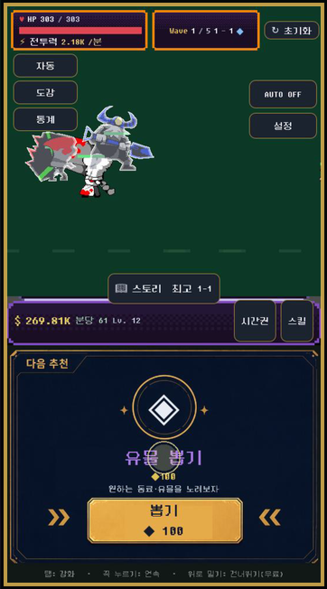

Your browser does not support the canvas tag.
이 게임을 실행하려면 JavaScript가 필요합니다. / This game requires JavaScript to run. / このゲームの実行にはJavaScriptが必要です。

SLOT SHOTS IDLE
불러오는 중…
세로로 들고 플레이하세요 · 소리를 켜면 더 좋습니다
첫 실행은 약 75MB를 내려받습니다 (Wi-Fi 권장)
2026-08-31 · 2f1f7aa
📱
세로로 돌려주세요